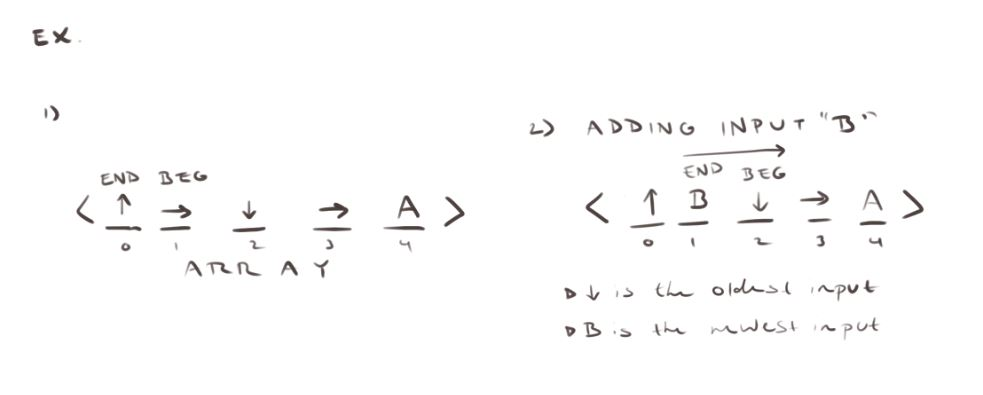

Development
FIGHTING GAME INPUT SYSTEM
Problem: How do 2d fighters interpert
commands like down-left-right-punch and turn them into fireballs?

I began by planning what the system would need. other than the basic task of
correctly reading the input, it would also have to use a set time frame, include
leniency for wrong inputs and prevent input conflicts.

Next, I came up with the general idea for how to store the inputs. My solution:
a cyclical array.

I continued planning by figuring out how to solve each of the aformentioned
additional requirements.
Finally, I rounded out the planning stage with a general class outline.

The implemented code stores any special move as a class-

and the stream as it's own class.
It holds all the inputs in an array, and has a distinct beginning(the oldest
input) and end (the most recent input)
index. When an input is added, it is placed at the index of the beginning, replacing
the previous value. The end and beg indeces are then shifted one to the right, which
shifts the new input to the end index and the oldest input to the beg index.
The beg and end indeces will also wrap back around to the left once the reach the end of the array.

The stream will also replace the oldest input with an empty
input every few milliseconds. This creates the timing window for
the command to be excecuted by the player.
The stream and all special moves are held in a stream reader class.
It looks for inputs when triggered by checking each input in the stream against
the specific codes stored in each CMD (special move) class. If an input matches
the current targeted character in the code, the targeted code is shifted over or "checked".
Once the whole code has been checked for a CMD, it is added to a list of
found CMDS. This way of "checklisting" the required codes allows the player to
input a slightly off code (such as down-up-right-left-punch where down-right-punch
is the code) and still get the desired special move.
The reader then checks for the priority of each code before outputing
the highest priority and most recent special move. This prevents the reader from outputting two
special moves on the same read.
The Stream is then flushed to prevent the reader from reading the same stream information twice
(which can result in unwanted specials being read)
The resulting program works as follows:
For more information visit the github repo: Github Link